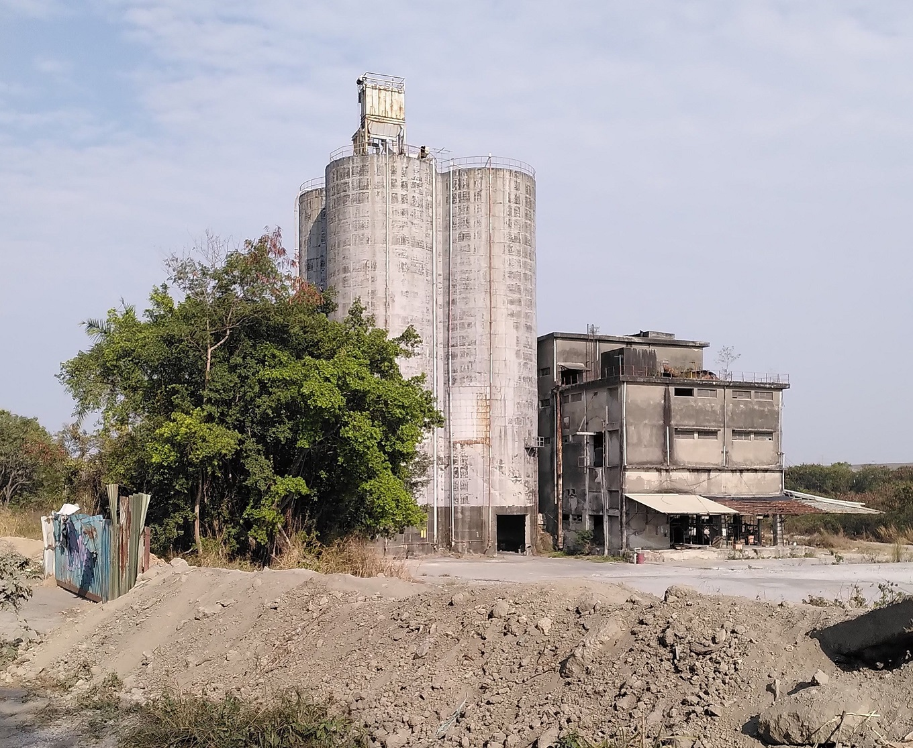

Created
Space to develop ideas until they have grown up to earn their own space. Mortality is high though.
Inbox
2025 03 18
Reading my criticism of spirit stream from 2025 02 17, it seems senseless. While online spaces have limited subtlety, I experienced myself, how I became my website. It contained large amounts of my mind at some point and me talking about my thoughts seemed superfluous since they are more completely available online. I had little to add to my online self. 3D and various media will help, but looking back, I was already starting to become the machine and didn't notice it. When I start being able to use the computer through its knowledge of the spirit stream, which should be withing reach of LLMs, I will be the machine.
To make the machine truly available for merging, significant effort should be put into precise, honest, simple tooling and interfaces. It seems to require:
- basic communication, like a text editor writing files with links to other files
- Content is only what is currently important. This seems to require version control to allow aggressive filtering while maintaining the past and so, peace of mind. This has also lead to higher quality thinking, because new stuff could conveniently build on the past without modifying it.
- Privacy through access control: authentication and/or encryption of sensitive data
- Local and remote hosting
Interface should be highly accessible: open source, well documented, minimally dependent on other software.
2025 03 01
Seeing an open world, suddenly. One that is not foreign, where things can be built and where humans, as a process produce things. I admire everything they make. I want to join the creators.I don't hope to convey this in writing. It is entirely unreasonable. It comes from an intuitive understanding that the world is built and can be built further. Build something and see.
2025 02 17
I feel that I have reached a dead end with the spirit stream. I have lost sight of the vision sufficiently to feel repelled from each of the paths to it that I see. Feeling too lazy. An extended web server, a from scratch text editor, app, server or operating system.
Today, I see an end. I notice limitations around online spaces. They are in fact not like a physical space that can be inhabited and that lives from subtle vibes from others. This subtlety hardly comes accross at all. Meta is trying with it's VR Glasses and they may be necessary. Online spaces are not such that I can go work there because they are too weakly linked to the physical.
Watching streams, videos, posts of other people has become dull and soul deadening. I enjoy days without social media too, maybe more.
Most recently, I have been considering building spaces in 3D so as to capture more subtelty. The spirit stream has always been about communicating the seemingly unimportant that would not survive in a book. But maybe, to the extent currently possible with computers, these things are actually superficial and unimportant. Why would any online-stranger care how I feel unless I already have so much to say that I wouldn't need online to find an audience?
Many things can't be found online. Hug, dance, kiss, build, have children, eat, shit.
Maybe writing truly is sufficient and the subtleties unimportant and forgotten if the content is good enough. Some words speak so clearly and loudly.
I've lost confidence that the interface can currently be improved sufficiently to merge with the machine. A spirit in the machine, an empathic intelligence is the key.
Despite the technical possibilities, it requires significant imagination to not see computers as dull.
I still lack clarity on this. Karpathy's Neural Networks: Zero to Hero is brilliant and largely so because it is him, not merely the content in a blog post.
2025 01 27
Since reflecting on Fear's offer, concluding that the fear-curiosity alliance is insufficient to drive me anywhere, other spirits have risen, but I haven't seen them yet.
Social life, family and expanding into the physical world. These spirits are more temperate.
Spirits have colors. Fear is smoke black, curiosity is endless black, skull white and intimate red/pink.
Who is green, brown?
Spirit Stream, the destination
If I want to integrate with the computer, the spirit stream is the path. I see it now. The day, the spirit stream is capable of containing the world, I become the world through the computer. The universe! Contain messaging, payment, data storage, streaming. Purchases.
Fear's offer
31.12.2024
Frustration got the better of me one summer evening. I had been learning programming, trying to get into the tinycorp, but was procrastinating too much and didn't know why. The window I had given myself was closing. I had all the reasons to shut up and grind: Meaningful work, opportunity, money, independence, a new social circle, status. That evening, I demanded to know what was holding me back.
If only it would manifest itself clearly so I could face it. Soon I was berating an imaginary person, demanding explanation.
In my fantasy, the person appeared in the open doorframe of my room. I recognized it as Fear. The corridor was dark, my room dimly lit. Fear had appeared before in that spot, visiting, but this time it was me talking, hammering into my keyboard:

fuck comfort
fuck this shit
i don't want help.
give me pain. where is it
so I can face it
i hate this shit
vegetating around
Fear remained silent, shrinking, which enraged me ever more.
this stupid sun and weather and all this shit
all this fucking productive land
fuck it
i dont want this heavenly shit
give me hell and see what i do
give it to me
kill me!
you weak motherfucker
Aware, how arrogantly I was speaking to Fear itself, I wanted to test myself in another fantasy.
In it, a literal monster noisily, aggressively, determinedly intruded into my home, coming to take me.
I was already feeling endless depths behind me, hell, misery, apathy. Anything I had left to loose appeared as mere surface detail, far and irrelevant. From the bottom of the pit, I promptly met the monster in the corridor, somewhat amused and curious, tilting my head, saying "I guess this is what it is now. Well, bring it on and we'll see what happens!" as I readied myself not only to fight the threat, but to thoroughly destroy it at any cost. I realized then, how far gone I was.
As Fear remained silent, I felt lifted into an open world, full of possibility. In it, I would become strong, determined, clean. I would firmly plant myself into it, forcefully realizing my interests, facing any obstacles fully and with the will to destruction. Fear was no longer opposing me, but in my right arm, flowing through it into action.
The next day, back to frustration, not much appeared different. I did start cleaning my room where, during my encounter, I had peripherally noticed uncleanliness like a disease that had infilitrated my space.
The next morning, in my head sprung up, that the primarly reason why I pursued the tinycorp was because it was hard and that I loved difficulty. So began a few days of mania. I worked. More. Didn't want to run, then ran for precisely that reason. Further, faster. Worked out. Cleaned. Cooked.
The world was open again. At this rate I could get anywhere in months.
Having trouble falling and staying asleep, the mania was eventually overpowered by tiredness and with time, working out, cleaning and cooking faded too.
1.1.2025
I still don't know how I could refuse this offer. What is missing and would it not have been reasonable to follow this path for some time either way?
Some more context from the preceeding weeks.

I noted:
a spirit hovers over the field in mist. destruction invites me.
a spike through my chest. long, thin blade.
a smile from the spirit and the open and curious eyes of creation
I was playing The Witcher 3: Wild Hunt and felt inspired by the main character, Geralt, a strong, stoic, apparently fearless monsterslayer, who, throughout the story, understandably and somewhat realistically gains all sorts of rewards for his character and superhuman work. Access, money, status, women, freedom. Notably, his friendgroup is similarly idealized: capable, trustworthy, courageous, beautiful, complementary people.
I was listening to Black Magick SS, particularly this cover of "My Love" and looking back, this most evidently ties these parts together to reflect my proclivity for right wing extremism - the strong invidiual. My given, very disagreeable personality seems largely responsible for this.
Follow the spirit, manifest yourself, integrate with the machine, see the doors to the world open, find a woman, create. What do you say?
I say, this sounds a hell of a lot like preplanned, boring ideology. It contradicts my intuition that true power flows effortlessly from an integrated being. It does not have to be fueled by propaganda.
I apparently prefer getting lost over knowingly walking the wrong path.
2024-12-20
thinking is a network seeking coherence and glowing up in coherent shapes of various sizes. smaller
shapes are replaced by bigger ones. bigger ones fade due to imperfection.
should be visualized. each pixel trying to cohere with another one.
2024-12-11
Talking about something is rather boring. The necessities of everyday life.
Talking with someone intensely feels like consciously using the interface to explore the landscape of
the other mind. Much like testing an input output function for its shape. There is something behind the
words, the face, the body. This is an offer to merge into coherence.
If there was a faster interface, its highest value would not be space for more stories to tell but space
to negotiate and reach coherence. = Makes it easier to understand someone and reach mutually
beneficial agreement.
2024-12-08 11:59
Don't know what I am talking about. Don't waste your time.
Abstract -> concrete
being
leap of faith
listening
colonizing the unviverse
colonizing the computer
a social network (spirit stream)
a computer
paying attention
seas of perception. selfless input-output flow.
without judgement
disfunctional nothing to do
the shape of experience is arbitrary but not changeable
leap of faith means to fall into the waves again
to take the seas seriously and to act on them
why live?
I notice my experience responding strongly to the question what might come tomorrow? and it favours
something over nothing
i conceptualize experience as guided by spirits
hunger, ambition, sadness, shame, aggression, death, affection
they argue and negotiate for attention
some spirits seem associated with objects.
If pretending to talk to a tree yields different patterns of thought, am I still pretending?
"Evil" is excessive aggression
"Good" may be excessive benevolence
It is difficult to navigate outside known patterns, to escape from excess into holism
they opposing voices are distant, easily disregarded.
a more stable metaspirit across multiple people may be necessary to regulate the spirits
= it makes sense to ask for help
the spirits want to realize themselves.
ultimately they don't like excess, they seek integrity
among their ambitions is colonization of computers
and founding a family, building a platform for other spirits to grow on
and colonize the universe
the body can be seen as colonized.
a useful extension that comes with its own needs (spirits)
nothing magical about this extension
be a body with 3 arms?
be a body with a computer?
be a body with internet?
be multiple bodies?
interface is the problem.
feedback, precision
the location of consciousness changes
playing videogames
will it stay awake in the computer when the body goes to sleep?
spirit stream should help as interface to use the internet more openly to express spirits
the computer should reveal itself as it is and the same infrastructure should be accessible to the self in the computer.
2024-10-14 10:10
There is a state of mind where I recognize that I don't own myself. That "I" don't exist. Rather, I am
experience and the structure of the world (brain, body, universe) merely acts through me. Meditation is
looking closely and waking up from the dream to see that the world is constructed all by itself in my
mind, that I am taken along on a ride through experience.
There, when I meet other people and am truly present, their expressions enter my perception similar to
my own. But now the underlying structure is not only my own and the apparently physical world, but there
are other spirits acting in it. To be poked at, explored, supported. If the spirits come to agree and
when exchange is saturated, effectively two minds are now entering the world, realizing themselves as
one.
With genuine curiosity, minds can be explored and possibly merged with.
Great danger comes from excluding spirits.
What Peterson might see in the bible is a pre-negotiated set of rules which offers a path of broad
coherence. In a sense, it is another spirit that can be negotiated with, that can extend my own spirit.
It also provides a language to think of the spirits. This language throws me off and I often don't
recognize myself in it.
Much of thought is like staring at a hole and iterating through paths to bridge it. Maybe there are many simultaneous holes and I am searching for an arrangement to shoot straight through them. It requires maintaining the context with all holes and working on multiple at the same time. Expanding the context of my mind might be extremely difficult. Instead, the context may contain items of increasingly broad scope, understood more deeply. Maybe contexts can be efficiently stored, restored.
Make functional and expressive clothing. Though it mostly modifies appearance. Rage quit from the pathetic SUV-style overlord brand identity bullshit that I find on the market.
2024-07-14 20:23
there are bridges to be built. between the ideas, nature, work, the spirits. Curiosity leads to testing
new ways to link them.
building a product means actualizing the spirits, making the product beautiful requires facing and
approaching beauty myself. Requires negotiating between the spirits and curageously producing something
complete. at least the most complete I can manage.
the product, in greatness, is not a mere tool. it developed the elegance to reflect the truth in itself.
to shine with the greens of growth, potential and mysteriousness, the mischivousness of a great troll,
the danger and exhiliaration of its varied use, power and darkness. It reflects so stongly, it might
just show the way. It should not miss but contain challenging sexiness, doors to transformation,
destructive determination, exposition, spontaneousness.
The tool is dead if I talk to it and its reflection does not answer.
These properties do not lead to a singular product, they are the consequence of a refined product that
reflects in truth, which can be the future of many products, though not all. The stupidity of some might
be so near infinite, their disappearance might be the best thing to happen to them. Like obsolete
projects unwilling to die gracefully or products encouraging and exploiting excess.
The awfully draining, painful, torturous creation of something beautiful looks deep into the creator.
Any of my tendencies to overplan, to clean obsessively, to autodestruct and turn evil in despair will
become concentrated and obvious in the naked product, subject to the open world, inevitably failing due
to its inadequacy and stupidity. I should not fear destruction, for I can try to fail gracefully.
The optimized organisms in nature reflect its truths. Nature does not leave alone, it knows me. The production of highly optimized, open systems that explore more of it, the continuation and expression of the spirits, is what they ask of me.
These are but empty words if they don't become actualized in a product.
There isn't anything but the present. The symbols of the past and future are superficial. it does not matter if I become terminally ill, am tortured, amount material wealth, receive social approval. there is only a naked person, the spirits and opportunity.
Elegance through open selection, trial of characters through risk, competition. exploration of the depths through implementing increasingly complete capacity. If I am not scared of the product, what is even the purpose of dealing with it?
cyberspace
Reaching cyberspace is an interface problem. If the computer would respond to my will more closely, my
mind would enter it more completely. Sometimes I fear that it is mostly here already and it just turned
out underwhelming.
Invention of telephones is followed by people who do nothing but phonecalls. Sucks. Tech can merge with
nature if it allows to contain it: Make the telephone usable, automatable by anyone.
preliminary expression. I wonder if cyberspace exist, what it looks like.
It seems, any ideological battle, any spiritual one, would be fought in virtual spaces because they
adapt faster, can be more expressive. How good are todays virtual spaces? what would the high quality
ones look like?
Visiting the endless worlds. Building a bridge to reality is an impossible translation, the work to
break myself at.
May the spirits remain informed by mortality and journey far.
2024-04-14 14:04 Responsive and forcible
Videogames offer paths to the goal. Need money, friends, reputation, a house? Complete these steps:
...
They may be hard, but the result can be forced by speedrunning them.
The real world is not responsive. Some theoretical offers are not truly available (homes, jobs, friends)
without apparent reason.
Homes are theoretically forcible through an axe and trees. Some groups don't permit this and the
underlying problem (no house) isn't addressed. Gradually higher grade solutions should be available with
similar simplicity.
Regulation produces "steps" in the gradient: Tax by income category.
Virtual clones -> easier, faster negotiation -> less or more accurate regulation
High clarity tools, shining with future potential, encourage creation and exploration like nothing else I know. Erode unnecessary structure. Delete it, force it, and see what happens.
2024-04-03 19:11
A sad time, when the illusion of a serious world strikes. May chaos not come uninvited.
https://www.youtube.com/watch?v=dy6neKO-8sk
Show don't tell.
There is no replacement for showing because minds including mine lie unconsciously.
Functionality persists, unlike looks. I value tools and the adventure they make available
Reducing complexity and word count are driving factors behind increasing resolution /clarity in thought/writing.

These abandoned buildings emitted an aura of great adventure. Ironically? Similar to buildings under construction, they are asking to be used, transformed, to become part of a new story. As they become "finished", this aura weakens, they become "boring". Their (unnecessary?) shiny finish discourages major modification, like drilling into or erecting new walls.
Think solar panels. theoretically, they need sun+cables+box that could stand anywhere. In the "finished"
homes that I know, this is (unnecessarily?) more complicated. Access to the roof? Facade mounting
possible? Get cables by the window inside? Need approval from all other residents?
What of this makes practical sense? Is it mostly a social problem? Is it solved by having virtual clones
that can negotiate for people cheaper and quicker so people can live where their spirit aligns more with
the opportunities of the environment?
It seems that a larger precentage of things in that ("abandoned") environment are beautiful to me, compared to "nice, calm, high living standard" environments. They become too "nice" and they disgust me, make me want to leave or destroy them.